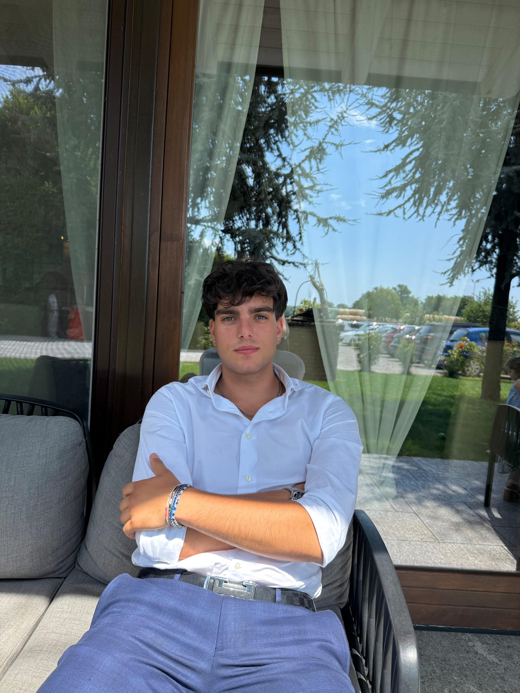
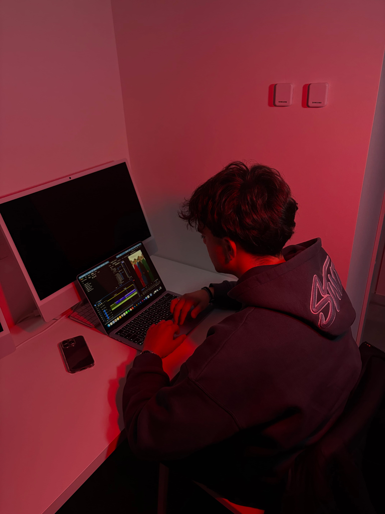
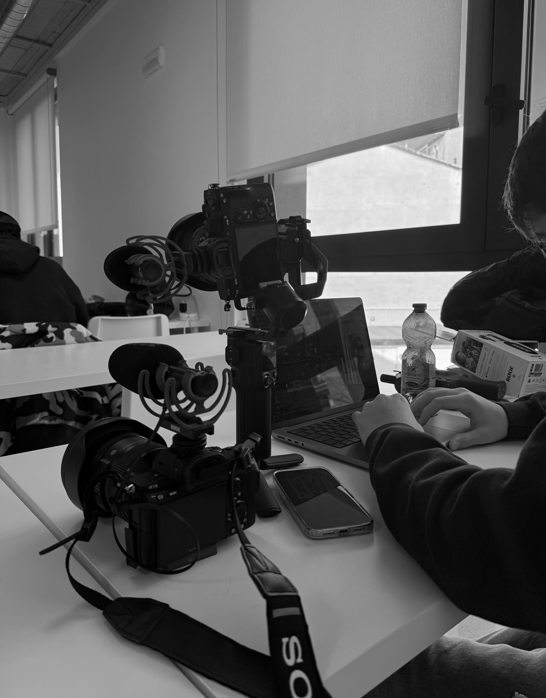

Sono appassionato di comunicazione digitale, grafica e creazione di contenuti. In questo portfolio raccolgo alcuni dei miei progetti tra design, contenuti visivi e video creati durante il mio percorso.
Scopri i miei progettiQuesto sito raccoglie alcuni dei progetti che ho realizzato nel campo della grafica e dei contenuti digitali. Ogni lavoro rappresenta una parte del mio percorso e della mia crescita nel mondo del digital marketing e del design.
All'interno troverai progetti grafici, contenuti visivi e lavori video che mostrano il mio approccio creativo alla comunicazione digitale.

Progettazione visiva e sviluppo concept creativi.
Fotoritocco e manipolazione immagini professionale.
Post-produzione fotografica.
Illustrazione e grafica vettoriale.
Impaginazione e layout per progetti editoriali.
Premiere, CapCut, Montaggio video.
Creazione rapida di contenuti digitali.
Creazione di progetti comunicativi digitali.

Descrizione progetto...
Lo scopo era la realizzazione di un video advertising della durata massima di 10 secondi, con l’obiettivo di raccontare il brand e il prodotto in modo efficace e immediato, adattando il contenuto ai canali digitali e alle strategie di comunicazione.
Lo scopo era la realizzazione di un video advertising della durata massima di 30 secondi, con l’obiettivo di raccontare il brand e il prodotto in modo chiaro e coinvolgente, adattando il contenuto ai canali digitali e alle diverse strategie di comunicazione.
Lo scopo era la realizzazione di un video organico, con l’obiettivo di presentare il prodotto in modo naturale e coinvolgente, attraverso un contenuto pensato per i social media e capace di integrarsi in modo spontaneo nel flusso dei contenuti digitali.
Realizzare un video espositivo capace di raccontare l’artigianato presente in fiera, mostrando prodotti, lavorazioni e dettagli in modo coinvolgente e informativo, valorizzando il lavoro degli artigiani.
Location - Milan, Italy